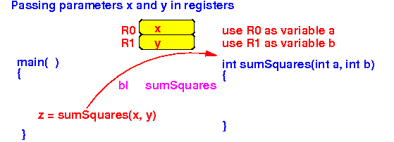
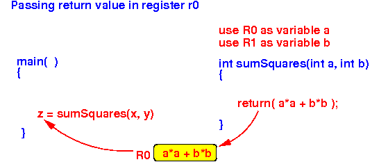

- Important Facts:
- Registers can be used
by
any instruction in the
computer program
Therefore:
- Any register can be used by any subroutine !!!
- Subroutines can
be written
by different programmers (people)
Case in point: you use library methods in the Java library that was written by someone else !!!
Therefore:
- There is no coordination between different subroutines on register assignments !!!
The general practice is:
- Every subroutine will assume that it can use any register in the CPU in its execution
- Registers can be used
by
any instruction in the
computer program
- Safety condition:
- The subroutine must be a leaf function (that does not call any function)
If the subroutine is not a leaf function, then its values in all or any register can be lost when it invokes another subroutine !!
But if the subroutine does not call any subroutine, it can safely use all register to store the parameters and local variable.
- Assumption:
- A method assumes
that all registers
are available for its own use
Reason: See above !!!
Because different methods may be written by different programmers, you cannot know which registers will be used and updated by a method that is not written by yourself. So you can never leave any important value in a register when you call another method --- because when the call returns, values in any register may/could have been changed (and you will lose the value) !!!
So when you write a subroutine, you will assume that the caller has saved all the important values in the registers and no register contains any value that will be needed. I.e.: you can use all general purpose registers.
- A method assumes
that all registers
are available for its own use
- What happens when you use
a register to
pass a
parameter:
- The called method (= the "callee")
will reserve some registers
to store parameters
- The caller method
(= the "caller") must
copy the
parameter value(s) into
the reserved register(s)
- The called method (= the "callee") must use the reserved register(s) as the specific parameter of the method
 - The called method (= the "callee")
will reserve some registers
to store parameters
- As you well know from CS170, Java methods can return values.
Example: a method that returns an int typed value
public int sum(int x, int y) { ... return (return_value); }
- Important fact:
- In Java,
the value returned by
a method is
always a
data type that can be stored
in a register
Example:
- The fundamental data types
(int, short, byte, float, char)
are equal to or less than 4 bytes
and can be stored in a
register
(A double can also be stored in a floating point register of the ARM processor --- we did not discuss these registers for brevity
- When a method returns
an object, it
actually returns
the address of
an object
Addresses can be stored in a register
- The fundamental data types
(int, short, byte, float, char)
are equal to or less than 4 bytes
and can be stored in a
register
Therefore:
- Return values of methods can always be stored in a register
- In Java,
the value returned by
a method is
always a
data type that can be stored
in a register
- What happens when you use
a register to
return a
function value:
- The called method
(= the "callee")
must
put the
return value in
the agreed register
before the
called method
(= the "callee")
returns
- The caller method
(= the "caller") must
use/copy the
value from
the agreed register
in expressions that
use the function call
- This agreed register
is usually
the register r0
of the ARM processor
(But in principle, you can use any general purpose register to return the function value)
- This agreed register
is usually
the register r0
of the ARM processor
- The called method
(= the "callee")
must
put the
return value in
the agreed register
before the
called method
(= the "callee")
returns
- Consider the following
function invocation:
/* ---------------------------------------------- sumSquares(a,b): returns (a*a + b*b) ---------------------------------------------- */ int sumSquares( int a, int b ) { return (a*a + b*b); } void main( ) { int x, y, z; z = sumSquares(x, y); }
- We will pass the parameters
and pass the return value as follows
using register:
 sumSquares assumes that all register are "free" (unused)
sumSquares reserves r0 to store parameter x and r1 to store parameter y
main passes the parameter x in the register r0
main passes the parameter y in the register r1
sumSquares passes the return value back in the register r0
sumSquares assumes that all register are "free" (unused)
sumSquares reserves r0 to store parameter x and r1 to store parameter y
main passes the parameter x in the register r0
main passes the parameter y in the register r1
sumSquares passes the return value back in the register r0
- Using the
agreed registers,
the main( ) method
will pass the
parameters x and y
and
use the return value
as follows
(illustrtated in assembler code):
/* ------------------------------------------------- Pass parameter x by copying its value in reg r0 ------------------------------------------------- */ movw r0, #:lower16:x movt r0, #:upper16:x ldr r0, [r0] /* ------------------------------------------------- Pass parameter y by copying its value in reg r1 ------------------------------------------------- */ movw r1, #:lower16:y movt r1, #:upper16:y ldr r1, [r1] /* ---------------------------------------------------------------- call z = sumSquares(x,y): agreed inputs: r0 = x, r1 = y ---------------------------------------------------------------- */ bl sumSquares // Call sumSquares /* ----------------------------------------------------------------- Agreed return location: r0 = return value  Save return value (in r0) to variable z (z = sumSquares(..)) ----------------------------------------------------------------- */ movw r1, #:lower16:z // Do NOT use r0 !!! movt r1, #:upper16:z // (Because r0 contains the return value) str r0, [r1] // This will store return value in z
- Using the
agreed registers,
the sumSquares( ) method
will get the
parameters a and b
and
pass the return value
as follows
(illustrtated in assembler code):
/* ---------------------------------------------------------------- Function sumSquares(a,b): agreed inputs: r0 = a, r1 = b agreed return: r0 = return value ---------------------------------------------------------------- */ sumSquares: // When sumSquares begin, we will have: r0 = a, r1 = b mul r2, r0, r0 // r2 = a*a (use r0 as var a) mul r3, r1, r1 // r3 = b*b (use r1 as var b) add r0, r2, r3 // r0 = a*a + b*b // The return value is now in r0 mov pc, lr // Return to the caller
- Example Program:
(Demo above code)

- Prog file: /home/cs255001/demo/asm/8-sub/reg-param1.s
How to run the program:
- To compile: as255 reg-param1
- To run: use EGTAPI